《追色手记58》学习资料
相机原图发黄：两步调出日系清新人像
视频标题 | 相机原图发黄？2步调出日系清新人像！附专业修图显示器选择技巧｜追色手记58 |
作者 | 摄影师聿铭 |
时长 | 约 10 分 2 秒 |
来源 | https://www.bilibili.com/video/BV11XrVBUEA3/ |
整理日期 | 2026-05-23 |
说明：本文根据视频音频转写、画面截取与内容校对整理，保留学习所需的方法、步骤和关键截图，不包含逐字稿。
日系清新人像作品参考截图
以下截图用于观察“原图偏黄 -> 校准白平衡 -> 明亮清透 -> 皮肤细腻”的变化，也保留了视频中给出的日系清新参考方向。
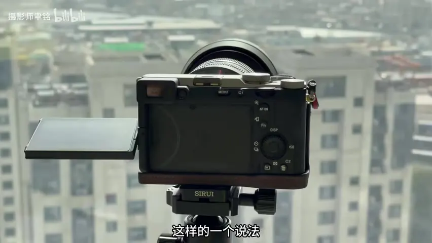 直出偏黄问题 |
肤色蜡黄 |
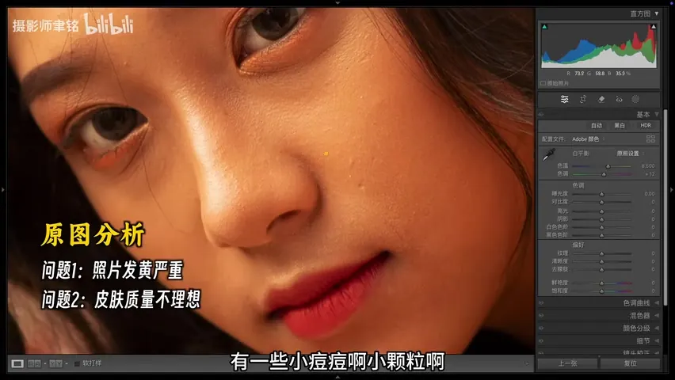 肤质不够干净 | 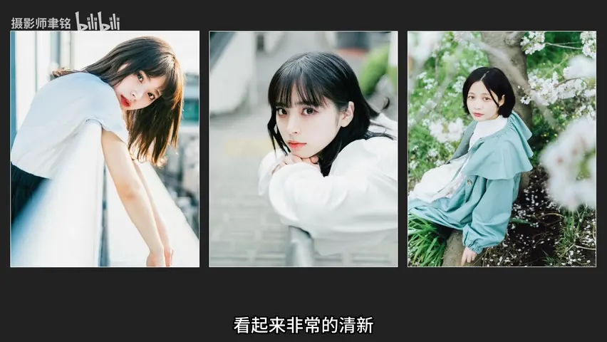 滨田/荒真人参考 |
|
人像配置文件 | 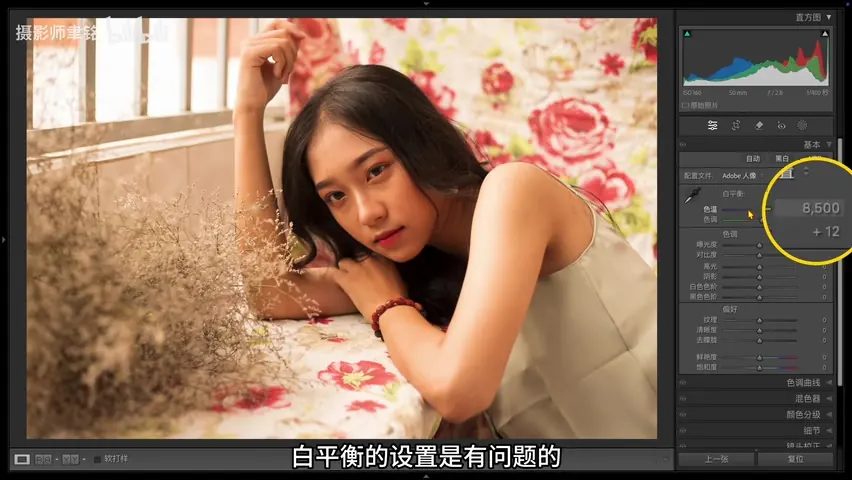 白平衡过暖 |
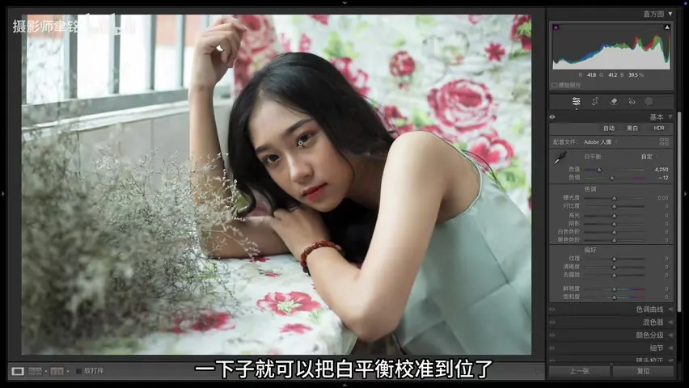 校正后清爽 |
影调色彩对比 |
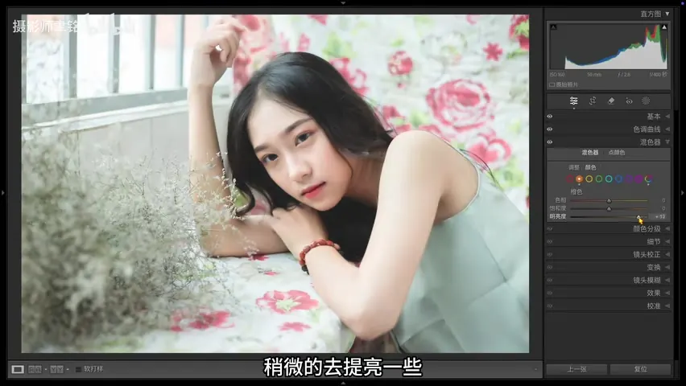 曲线空气感 | 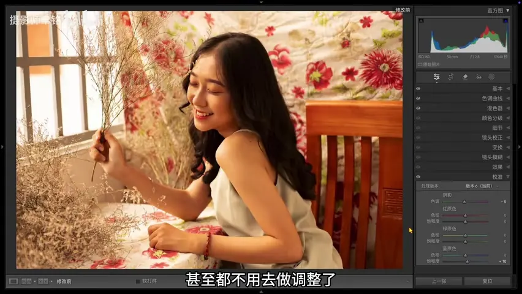 最终效果对比 |
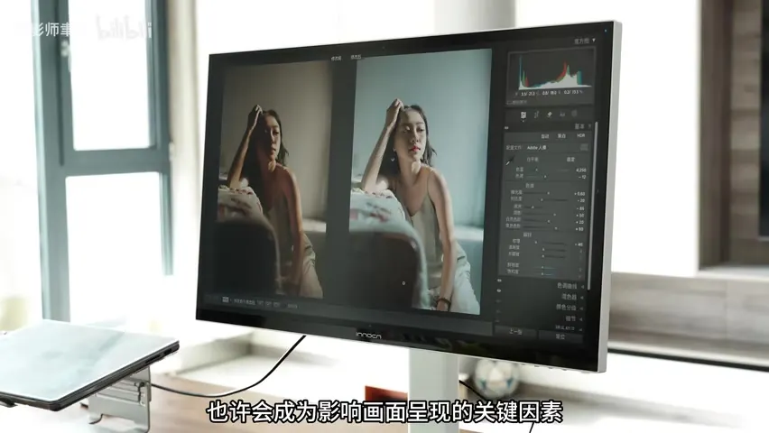 其他照片套用 | 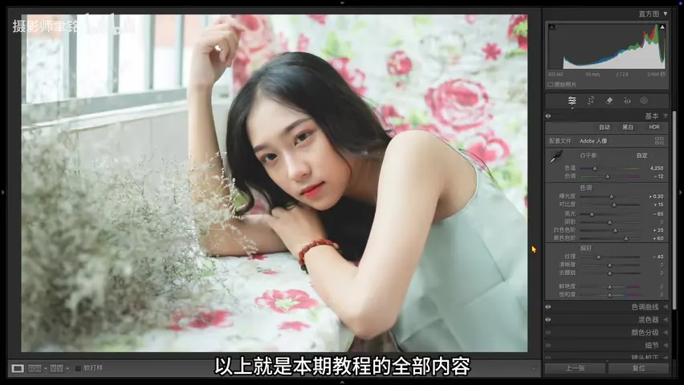 最终侧面对比 |
一页速览
风格目标 | 把偏黄、肤色发蜡的相机原图，调成整体偏冷、明亮、干净、皮肤通透的日系清新人像。 |
第一步 | 先校准颜色：选择 Adobe Portrait 配置文件，用白平衡吸管点中性区域；没有灰卡时，可用眼白作为近似参考。 |
第二步 | 再做清透感：提高曝光、保护高光、提亮白色和黑色，配合降低纹理、曲线抬黑、橙色提亮与校准微调。 |
色彩管理 | 修图前要保证显示器颜色可靠；屏幕不准时，白平衡、肤色和导出结果都容易判断失误。 |
学习目标
能判断原图偏黄时，问题是白平衡、配置文件还是屏幕显示造成的。
能用配置文件和白平衡吸管快速消除肤色蜡黄感。
能用基础面板建立日系清新人像的明亮空气感。
能用纹理、曲线、HSL 和校准让皮肤更细腻、颜色更冷净。
能把同一套思路迁移到其他偏黄照片，并根据曝光和对比微调。
原图诊断
问题 | 画面表现 | 解决方向 |
整体发黄 | 画面像蒙了一层黄，缺少清爽感。 | 换人像配置文件，重新取白平衡。 |
肤色发蜡 | 皮肤偏黄、偏闷，青春感不足。 | 白平衡校准后，橙色明亮度适当提高。 |
肤质粗糙 | 痘痘、颗粒和纹理让画面显脏。 | 降低纹理，配合曲线和降噪让皮肤更细腻。 |
高光易溢出 | 窗边亮部容易没细节。 | 降低高光，再提高白色保留空气感。 |
画面易灰 | 提亮后整体反差不足。 | 适当补对比，曲线中低调重新压回。 |
两步调色流程
校准显示与配置文件：先确认显示器色彩准确。进入 Lightroom 后，把配置文件从 Adobe Color 切到 Adobe Portrait，让肤色基础更适合人像。
白平衡纠偏：原片白平衡约 8500，明显偏暖。用白平衡吸管点中性灰；没有 18% 灰时，可点眼白作为近似中性参考，先把黄色偏色拉回。
建立明亮基底：日系清新风格偏亮，先提高曝光；窗口亮部过曝时降低高光，再提高白色色阶恢复空气感。
提暗部但保留层次：提高黑色色阶和阴影，让画面更透；如果因此发灰，就加一点对比度或在曲线中压回暗部。
柔化皮肤：降低纹理，让皮肤颗粒、细节和痘痘观感减弱。注意这是全局柔化，幅度要保守。
曲线塑形：曲线整体上扬，黑点轻抬制造柔和暗部；随后把阴影压回，避免暗部浮灰。
HSL 与校准收尾：橙色明亮度提高，让肤色更白净；校准里阴影加一点绿色，蓝原色饱和度略加，补出清爽的日系冷净感。
迁移到其他照片：复制设置到其他图后，不要硬套参数；重点微调曝光和对比，让每张照片的肤色与高光都舒服。
工具速查表
工具 | 用途 | 本片操作 | 注意点 |
显示器/色域 | 保证判断可靠 | 使用色准可靠的显示设备，按输出场景选择色域。 | 屏幕不准会直接带偏肤色判断。 |
配置文件 | 确定人像基础色 | Adobe Color -> Adobe Portrait。 | 先换配置文件，再做白平衡。 |
白平衡 | 去除偏黄 | 吸管取中性区域或眼白。 | 眼白只是近似参考，仍需凭画面微调。 |
基础面板 | 建立明亮清透 | 曝光上提，高光压低，白色和黑色上提，对比微加。 | 提亮后要保护窗边高光。 |
纹理 | 柔化肤质 | 纹理降低。 | 过量会让五官和头发发糊。 |
曲线 | 塑造空气感 | 整体上扬，抬黑点，暗部压回。 | 抬黑后要防灰。 |
HSL/校准 | 精修肤色与冷净感 | 橙色明亮度上提，阴影加绿，蓝原色饱和略加。 | 只做少量修正，不要把肤色调脏。 |
关键截图与讲解
图 01 | 00:12 | 相机颜色与偏黄问题。
学习要点：这期从相机原图发黄切入，先提醒修图颜色判断要可靠。
图 02 | 00:58 | 原图分析。
学习要点：第一眼问题是整体偏黄，画面不够清爽。
图 03 | 01:08 | 肤色蜡黄。
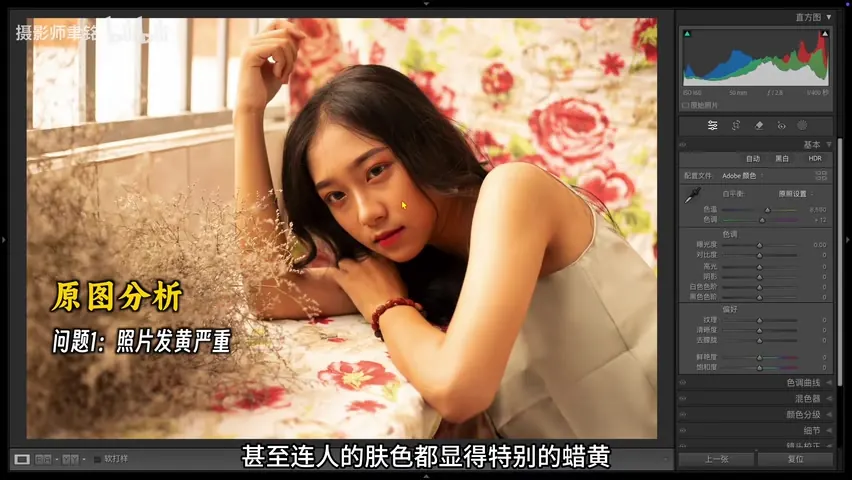
学习要点：偏黄肤色会削弱年轻、通透和干净感。
图 04 | 01:18 | 肤质不够细。
学习要点：颗粒、痘痘和粗纹理会让日系清新感下降。
图 05 | 01:45 | 日系参考方向。
学习要点：参考滨田英明和荒真人作品：整体更冷、更干净、更清新。
图 06 | 03:43 | 切换 Adobe Portrait。
学习要点：人像配置文件让肤色基础更适合后续调整。
图 07 | 04:14 | 白平衡过暖。
学习要点：原片 8500 左右的白平衡让画面明显发黄。
图 08 | 04:29 | 吸管点眼白。
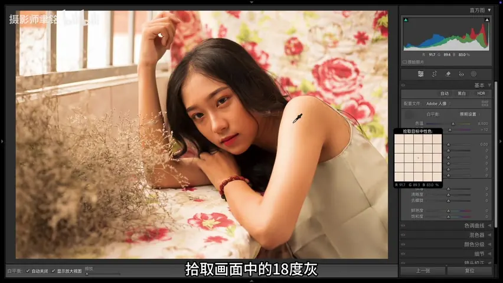
学习要点：没有灰卡时，眼白可以作为近似中性参照。
图 09 | 04:44 | 白平衡校正后。
学习要点：偏黄感快速消失，画面变得清爽。
图 10 | 04:55 | 提高曝光。
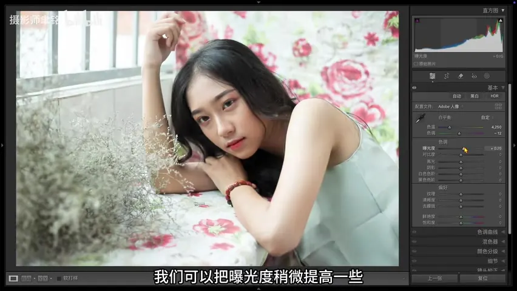
学习要点：日系清新人像通常整体更明亮。
图 11 | 05:03 | 降低高光。
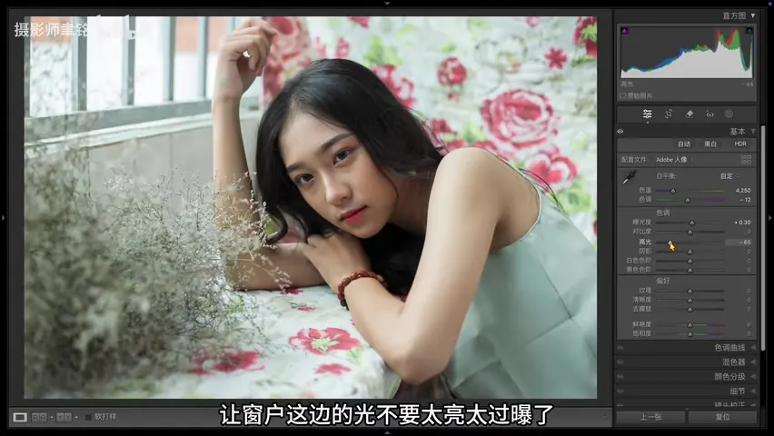
学习要点：保护窗口等亮部细节，避免大面积死白。
图 12 | 05:10 | 提高白色色阶。
学习要点：在保留细节后再把亮部空气感推回来。
图 13 | 05:20 | 提高黑色色阶。
学习要点：暗部更轻、更透，符合清新风格。
图 14 | 05:27 | 补一点对比。
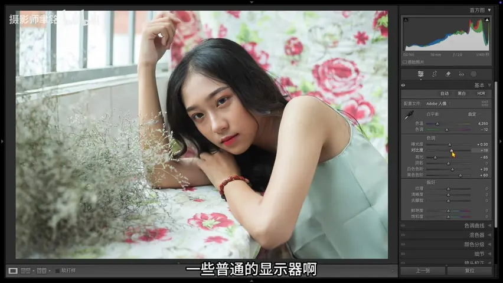
学习要点：提亮后容易灰，用轻微对比拉回层次。
图 15 | 06:05 | 影调色彩前后。
学习要点：校色和基础影调已经让画面方向明显改变。
图 16 | 06:31 | 降低纹理。
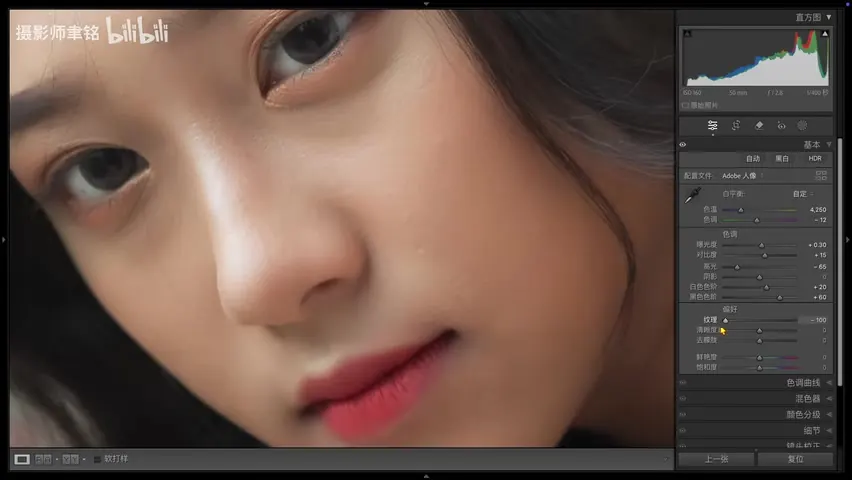
学习要点：用柔化质感改善皮肤粗糙和脏感。
图 17 | 06:48 | 曲线整体上扬。
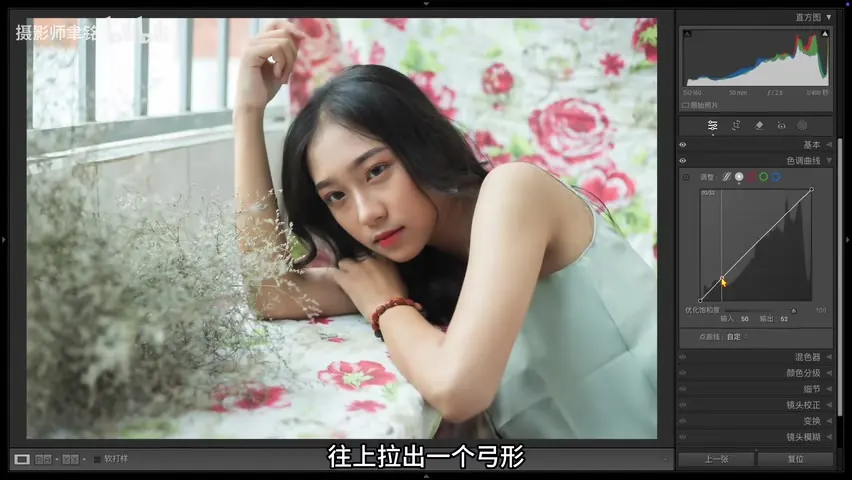
学习要点：继续制造明亮、轻盈的日系空气感。
图 18 | 06:59 | 曲线抬黑点。
学习要点：暗部不再死黑，整体更柔和。
图 19 | 07:12 | 暗部压回。
学习要点：抬黑后再收回阴影，避免画面漂灰。
图 20 | 07:56 | 橙色明亮度。
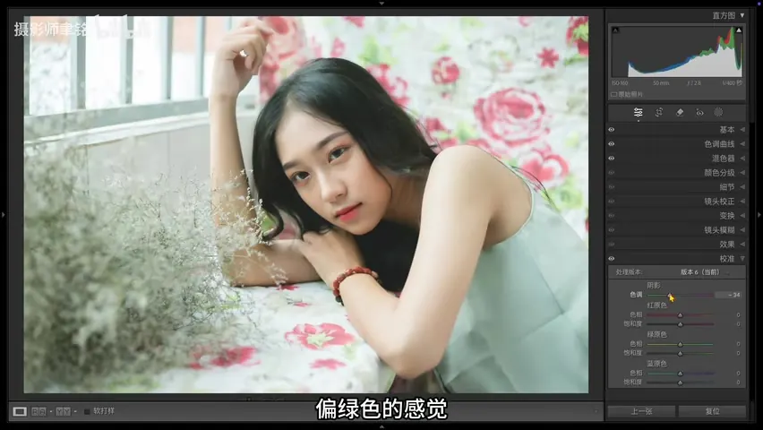
学习要点：橙色主要控制肤色，提亮后皮肤更白净。
图 21 | 08:16 | 校准阴影加绿。
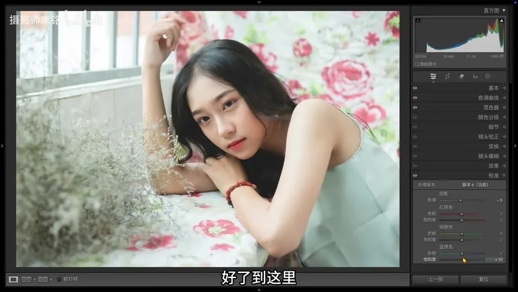
学习要点：少量调整阴影色彩，让画面更冷净。
图 22 | 08:29 | 蓝原色饱和。
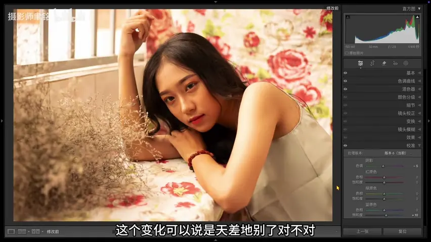
学习要点：轻微增强蓝原色饱和度，补清爽色彩。
图 23 | 08:41 | 最终前后对比。
学习要点：偏黄、蜡黄的原片被校正成更干净的日系清新方向。
图 24 | 09:58 | 最终组合对比。
学习要点：套用到同组照片时，仍要按每张图微调曝光和对比。
练习任务
找一张整体偏黄、皮肤发蜡的室内自然光人像，先不要急着套预设。
先把配置文件切到 Adobe Portrait，再用白平衡吸管点眼白或中性灰区域。
把画面提亮，压高光、提白色，观察窗口或衣服亮部是否保留细节。
降低纹理并轻抬曲线黑点，再把暗部压回，检查画面是否发灰。
只重点调整橙色明亮度和校准里的少量冷色倾向，避免肤色变脏。
复制到第二张照片后，只微调曝光和对比，观察这套思路是否成立。
复盘清单
检查项 | 通过标准 |
白平衡 | 眼白、墙面或灰色物体不再明显偏黄。 |
肤色 | 皮肤清透，不蜡黄、不泛灰。 |
高光 | 窗边亮部保留一点细节，同时仍有空气感。 |
暗部 | 黑色轻透但不糊成一片灰。 |
肤质 | 纹理柔和，五官和头发仍清晰。 |
迁移 | 同组照片套用后只需少量曝光/对比微调。 |
时间轴速查
时间 | 模块 | 重点 |
00:10-01:40 | 问题诊断 | 相机原图偏黄、肤色发蜡、肤质不够细。 |
01:40-03:20 | 参考与色彩管理 | 日系清新人像参考，修图前保证屏幕颜色准确。 |
03:40-04:45 | 校色 | 切 Adobe Portrait，用白平衡吸管校正偏黄。 |
04:50-05:35 | 基础影调 | 提曝光、压高光、提白色和黑色、补对比。 |
06:20-07:40 | 质感与曲线 | 降纹理，曲线整体上扬、抬黑点、暗部压回。 |
07:50-08:35 | HSL/校准 | 橙色提亮肤色，阴影加绿，蓝原色饱和微调。 |
08:40-10:00 | 应用与复盘 | 查看前后对比，套用到其他照片并微调。 |
全部图片
本页共保留 27 张来自 Word 的图片。上方正文中已按文档顺序展示，这里作为总览索引。